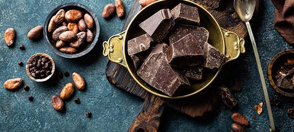
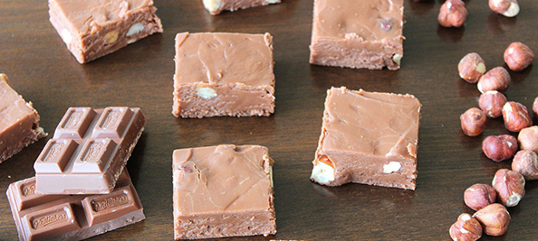
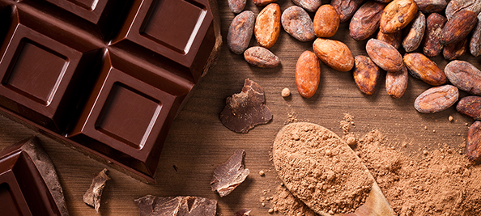
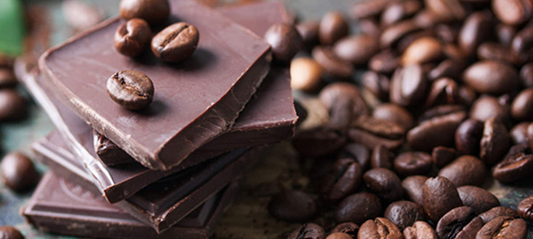
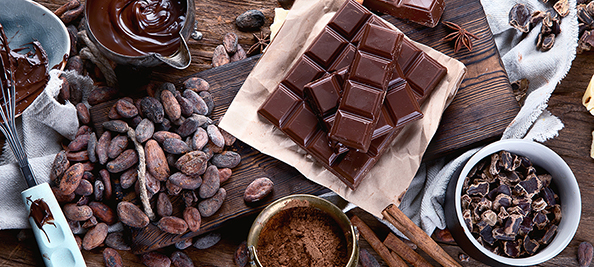

7 Proven Health Benefits of Dark Chocolate
Dark chocolate is loaded with nutrients that can positively affect your health.
Made from the seed of the cocoa tree, it is one of the best sources of antioxidants on the planet.
Studies show that dark chocolate (not the sugary crap) can improve your health and lower the risk of heart disease.
This article reviews 7 health benefits of dark chocolate or cocoa that are supported by science.
1. Very Nutritious
If you buy quality dark chocolate with a high cocoa content, then it is actually quite nutritious.
It contains a decent amount of soluble fiber and is loaded with minerals.
A 100-gram bar of dark chocolate with 70-85% cocoa contains :
- 11 grams of fiber
- 67% of the RDI for iron
- 58% of the RDI for magnesium
- 89% of the RDI for copper
- 98% of the RDI for manganese
- It also has plenty of potassium, phosphorus, zinc and selenium
Of course, 100 grams (3.5 ounces) is a fairly large amount and not something you should be consuming daily. All these nutrients also come with 600 calories and moderate amounts of sugar.
For this reason, dark chocolate is best consumed in moderation.
The fatty acid profile of cocoa and dark chocolate is also excellent. The fats are mostly saturated and monounsaturated, with small amounts of polyunsaturated fat.
It also contains stimulants like caffeine and theobromine, but is unlikely to keep you awake at night as the amount of caffeine is very small compared to coffee.
SUMMARY
Quality dark chocolate is rich in fiber, iron, magnesium, copper, manganese and a few other minerals.
2. Powerful Source of Antioxidants
ORAC stands for "oxygen radical absorbance capacity." It is a measure of the antioxidant activity of foods.
Basically, researchers set a bunch of free radicals (bad) against a sample of a food and see how well the antioxidants in the food can "disarm" the radicals.
The biological relevance of ORAC values is questioned, because it's measured in a test tube and may not have the same effect in the body.
However, it is worth mentioning that raw, unprocessed cocoa beans are among the highest-scoring foods that have been tested.
Dark chocolate is loaded with organic compounds that are biologically active and function as antioxidants. These include polyphenols, flavanols and catechins, among others.
One study showed that cocoa and dark chocolate had more antioxidant activity, polyphenols and flavanols than any other fruits tested, which included blueberries and acai berries
SUMMARY
Cocoa and dark chocolate have a wide variety of powerful antioxidants. In fact, they have way more than most other foods.
3. May Improve Blood Flow and Lower Blood Pressure
The flavanols in dark chocolate can stimulate the endothelium, the lining of arteries, to produce nitric oxide (NO).
One of the functions of NO is to send signals to the arteries to relax, which lowers the resistance to blood flow and therefore reduces blood pressure.
Many controlled studies show that cocoa and dark chocolate can improve blood flow and lower blood pressure, though the effects are usually mild.
However, one study in people with high blood pressure showed no effect, so take all this with a grain of salt.
SUMMARY
The bioactive compounds in cocoa may improve blood flow in the arteries and cause a small but statistically significant decrease in blood pressure.
4. Raises HDL and Protects LDL From Oxidation
Consuming dark chocolate can improve several important risk factors for heart disease.
In a controlled study, cocoa powder was found to significantly decrease oxidized LDL cholesterol in men. It also increased HDL and lowered total LDL for those with high cholesterol.
Oxidized LDL means that the LDL ("bad" cholesterol) has reacted with free radicals.
This makes the LDL particle itself reactive and capable of damaging other tissues, such as the lining of the arteries in your heart.
It makes perfect sense that cocoa lowers oxidized LDL. It contains an abundance of powerful antioxidants that do make it into the bloodstream and protect lipoproteins against oxidative damage.
Dark chocolate can also reduce insulin resistance, which is another common risk factor for many diseases like heart disease and diabetes.
SUMMARY
Dark chocolate improves several important risk factors for disease. It lowers the susceptibility of LDL to oxidative damage while increasing HDL and improving insulin sensitivity.
5. May Reduce Heart Disease Risk
The compounds in dark chocolate appear to be highly protective against the oxidation of LDL.
In the long term, this should cause much less cholesterol to lodge in the arteries, resulting in a lower risk of heart disease.
In fact, several long-term observational studies show a fairly drastic improvement.
In a study of 470 elderly men, cocoa was found to reduce the risk of death from heart disease by a whopping 50% over a 15 year period.
Another study revealed that eating chocolate two or more times per week lowered the risk of having calcified plaque in the arteries by 32%. Eating chocolate less frequently had no effect.
Yet another study showed that eating dark chocolate more than 5 times per week lowered the risk of heart disease by 57%.
Of course, these three studies are observational studies, so can't prove that it was the chocolate that reduced the risk.
However, since the biological process is known (lower blood pressure and oxidized LDL), it is plausible that regularly eating dark chocolate may reduce the risk of heart disease.
SUMMARY
Observational studies show a drastic reduction in heart disease risk among those who consume the most chocolate.
6. May Protect Your Skin From the Sun
The bioactive compounds in dark chocolate may also be great for your skin.
The flavonols can protect against sun damage, improve blood flow to the skin and increase skin density and hydration.
The minimal erythemal dose (MED) is the minimum amount of UVB rays required to cause redness in the skin 24 hours after exposure.
In one study of 30 people, the MED more than doubled after consuming dark chocolate high in flavanols for 12 weeks.
If you're planning a beach vacation, consider loading up on dark chocolate in the prior weeks and months.
SUMMARY
Studies show that the flavanols from cocoa can improve blood flow to the skin and protect it from sun damage.
7. Could Improve Brain Function
The good news isn't over yet. Dark chocolate may also improve the function of your brain.
One study of healthy volunteers showed that eating high-flavanol cocoa for five days improved blood flow to the brain.
Cocoa may also significantly improve cognitive function in elderly people with mental impairment. It may improve verbal fluency and several risk factors for disease, as well.
Additionally, cocoa contains stimulant substances like caffeine and theobromine, which may be a key reason why it can improve brain function in the short term.
SUMMARY
Cocoa or dark chocolate may improve brain function by increasing blood flow. It also contains stimulants like caffeine and theobromine.
The bottom line
There is considerable evidence that cocoa can provide powerful health benefits, being especially protective against heart disease.
Of course, this doesn't mean you should go all out and consume lots of chocolate every day. It is still loaded with calories and easy to overeat.
Maybe have a square or two after dinner and try to really savor them. If you want the benefits of cocoa without the calories in chocolate, consider making a hot cocoa without any cream or sugar.
Also be aware that a lot of the chocolate on the market is not healthy.
Choose quality stuff — dark chocolate with 70% or higher cocoa content. You might want to check out this guide on how to find the best dark chocolate.
Dark chocolates typically contain some sugar, but the amounts are usually small and the darker the chocolate, the less sugar it will contain.
Chocolate is one of the few foods that taste awesome while providing significant health benefits.